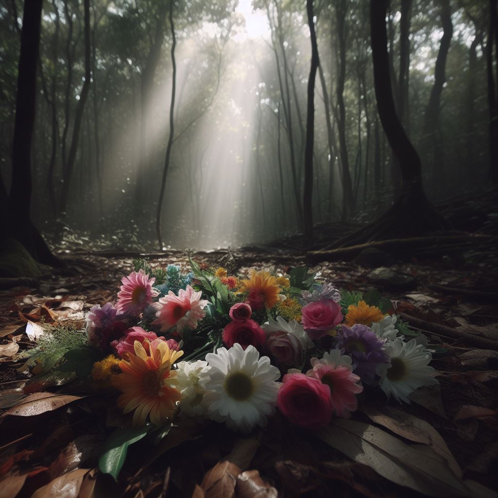
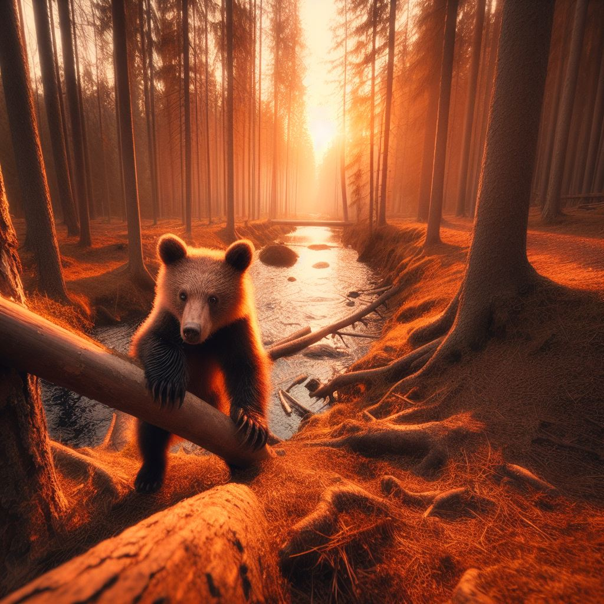
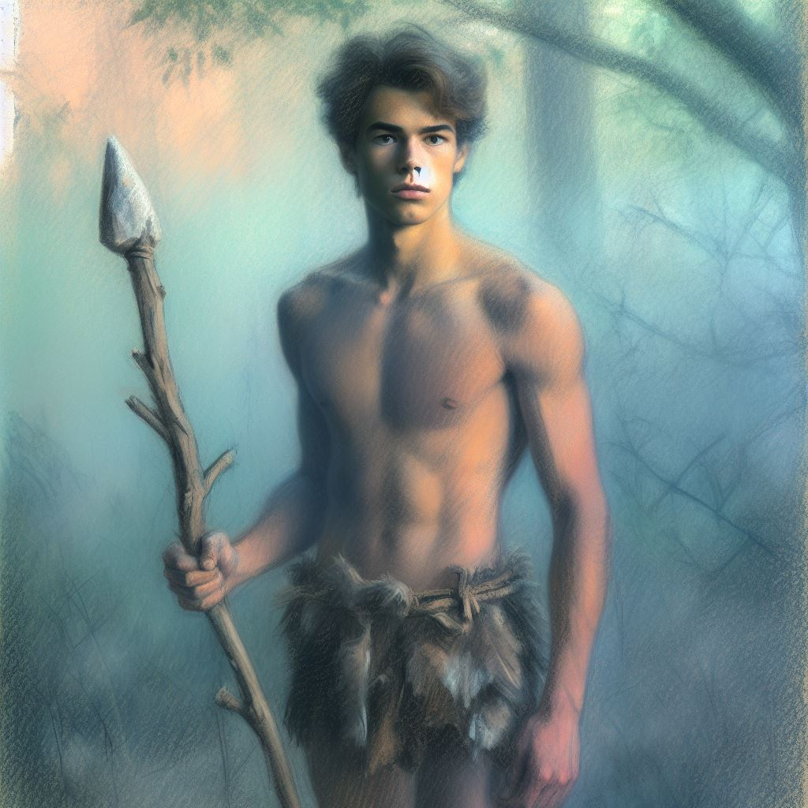

Aol stał w rzędzie z resztą młodzieży, z niecierpliwością czekając na przydział zadania. Nie mógł się doczekać, aż starszyzna jego plemienia uzna go za dorosłego. Dorośli doświadczali ciekawszych przygód. Polowali na większą zwierzynę, wykonywali misje zwiadowcze pośród okolicznych plemion. Dla dzieci, jakim to wciąż był Aol, pozostawało tylko zbieranie grzybów i owoców w lesie bądź łowienie ryb. Ewentualnie można było zająć się jeszcze mniejszymi dziećmi, których zgraja kręciła się im bez przerwy między nogami. Ale na to chłopak nie miał żadnej ochoty. - Kto idzie nad rzekę? – zapytał stojący przed nimi instruktor, Esse. Rękę podniosło kilka dziewczyn i wszyscy chłopacy. Wszyscy, oprócz Aola. Łowienie ryb uznawane było za aktywność najbardziej zbliżoną do polowania, gdzie można było wykazać się swoją zręcznością i sprytem. To z kolei zwiększało szansę, by w przyszłości zostać mianowanym na łowcę łosi, tygrysów czy nawet mamutów. Ochotnicy zabrali stojący pod chatką Essego sprzęt, na który składały się noże, wędki z lnianymi linkami i drewnianymi haczykami oraz włókniane sieci. - Reszta, pójdźcie dzisiaj na północny-wschód. Nie odchodźcie na więcej niż pięć tysięcy kroków. Iro będzie was pilnować – powiedział opiekun i wskazał na stojącą niedaleko postawną kobietę. Jako jedyna kobieta pełniła funkcję wojownika w ich plemieniu, wobec czego zdjęto z niej obowiązek zbierania i przygotowywania jedzenia. W zamian za to zapewniała ochronę grupom opuszczającym teren obozowiska. Jej ulubioną broń stanowiła zakończona naostrzonym kamieniem dzida. Podobno zabiła już pięć osób. Esse wraz z rybakami odeszli na południe. Czekała ich solidna porcja marszu, około siedmiu tysięcy kroków w jedną stronę. Normalnie plemię przebywa bliżej zbiorników wodnych. Jednak niekończące się waśnie z okolicznymi grupami popchnęły starszyznę do decyzji, aby opuścić tamte okolice i znaleźć spokojniejsze rejony. Zanim Esse z młodzieżą złowią odpowiednią ilość pokarmu i sami się nie posilą, z pewnością będzie się już ściemniać. Co zostawia Aolowi cały dzień, by spróbować zaprosić Ili nad odkryty niedawno wodospad. Grupka przygotowała worki wycięte ze skór upolowanej zwierzyny i wraz z kilkoma kobiet trzymającymi na biodrze niemowlaki, ruszyli w drogę. Iro poleciła im rozpierzchnąć się, lecz pozostawać od siebie w odległości krótkiego biegu. Nie miała zamiaru ryzykować, że na jej warcie komukolwiek stanie się krzywda. Aol oddalił się nieznacznie od grupy i do swojego worka zaczął wrzucał przypadkowo napotkane grzyby. Nie poświęcał temu zadaniu specjalnej uwagi. Zamiast tego wypatrywał wśród porastającej las zieleni kolorowych płatków. Choć pora roku wciąż nie sprzyjała, udało mu się znaleźć kilka pięknych okazów. Starał się, by zebrany bukiet prezentował się gustownie. Nie wyrywał każdego napotkanego kwiatu, tak jak leci. Dobierał głównie jasne i niezbyt jaskrawe kolory. Biały, pomarańczowy, jeśli miał szczęście to fioletowy. Czynność ta pochłonęła go na tyle, że zanim się zorientował, słońce spoglądało na niego z pełnego zenitu. Jego worek ledwo co obciążał ramię. Zadowolony z osiągniętego rezultatu, Aol związał łodygi kwiatów zawczasu przygotowanym sznurkiem z traw, po czym przywiązał sobie go do skraju ubrania. Żeby nie nabawić się żadnego upomnienia, skupił całą swoją uwagę na szukaniu jagód, grzybów, korzonków i innych dających się spożyć wytworów lasu. Po pewnym czasie usłyszał, jak Iro woła ich z powrotem do obozu. Zbieranie zakończyło się, teraz trzeba wrócić i przygotować posiłek, zanim słońce zniknie za horyzontem. Uznał, że to świetny moment, by odszukać Ili i spróbować swojego szczęścia. Biegał więc pomiędzy zauważonymi pośród lasu sylwetkami, pytając się swoich współplemieńców, czy nie widzieli gdzieś dziewczyny. Niestety, żadne z nich nie mogło mu pomóc. Zauważywszy przyczepiony do jego boku bukiet kwiatów, życzyli mu powodzenia. Nieliczni wykrzywiali usta w ironicznym uśmieszku, z czego Aol nic sobie jednak nie robił. Mimo wszystko zaczął się niepokoić, że nie zdąży znaleźć dziewczyny, zanim ta wróci do obozu. Nie chciał wręczać jej bukietu przy wszystkich, szczególnie przy innych chłopakach. Nagle zauważył między drzewami błysk charakterystycznie jasnych włosów. Truchtem podbiegł w jej stronę i z daleka ujrzał, jak nieprzejmująca się końcem dnia Ili kuca przy krzakach jagód i co drugą wrzuca do ust. Aol zwolnił kroku, odpiął sznurek od ubrania i schował kwiaty za plecami. Zamknął na chwilę oczy, wziął głęboki wdech i ostrożnie, po cichu zaczął się zbliżać. Zauważył podłużny cień w trawie. W szybkim tempie zbliżał się do odwróconej plecami Ili. Chłopak stanął jak wryty w miejscu. Wąż był już od dziewczyny w odległości zaledwie kilku kroków. Aol nie miał szansy dobiec na czas. Mięśnie jego rąk rozluźniły się nagle. kwiaty rozsypały się po runie lasu. - Ili! Wąż – zdołał wykrzyknąć przez ściśnięte gardło. Dziewczyna odwróciła się, spojrzała na niego zdezorientowanym wzrokiem, jednak w mgnieniu oka rozeznała się w sytuacji. Zauważyła wijącego się przed nią węża, który podnosił swoje ciało do skoku. Zręcznym gestem chwyciła leżący na ziemi obok nóż i zamaszystym ruchem ręki posłała go przed siebie. Broń wykonała pojedynczy piruet, zanim wbiła się w ziemię. Gad próbował się wyswobodzić, jednak zaostrzony kamień skutecznie zakotwiczał go w ziemi. Kilkukrotnie wysuwał język w stronę Ili, jednocześnie kurcząc swoje ciało, próbując dalej zdążać w jej kierunku. Dziewczyna podeszła do pobliskiego drzewa, gdzie z ziemi odkopała solidnej wielkości kamień. Wróciła do zwierzęcia, podniosła kamień do góry i szybkim ruchem opuściła go prosto na głowę węża. Gdy odkładała go na ziemię, gad leżał już nieruchomo. Aol się zakochał. - Dzięki za ostrzeżenie – powiedziała jasnowłosa dziewczyna. Wyciągnęła swój nóż z ciała martwego zwierzęcia i wrzuciła go do worka z żywnością. Jej wzrok padł na rozsypane wokół stóp Aola kwiaty – To dla mnie? Chłopak zająknął się, nie wiedząc co odpowiedzieć. Podrapał się po karku i nieśmiało przytaknął. Ukucnął i zebrał co ładniejsze egzemplarze, które następnie wyciągnął przed siebie, w znacznie uszczuplonym, ale wciąż nieźle prezentującym się bukiecie. - Niedaleko od obozu jest wodospad – zdobył się w końcu na odwagę - Znalazłem go podczas spaceru kilka dni temu. Trzeba trochę do niego przejść, ale jeśli wyjdziemy niedługo po obiedzie to na spokojnie zdążymy wrócić przed zmierzchem. Dziewczyna zmierzyła go wzrokiem. Wydęła wargi do przodu i przechyliła głowę na bok, jakby zastanawiała się nad odpowiedzią. - W porządku – odparła – Oby to było warte zachodu.
Chłopak nie posiadał się z radości. Jak codziennie w południe całe plemię zgromadziło się wokół rozpalonego ogniska. Od północy siedział wódz ze swoją wybranką i dziećmi. Choć teoretycznie wszyscy byli równi, im bliżej wodza ktoś zasiadał, tym większym poważaniem cieszył się wśród współplemieńców. Aol wraz z matką, Ultą, siedzieli jedynie kilka miejsc od Isto, najmłodszego syna wodza. Taką pozycję bohatersko zagwarantował im ojciec chłopaka. Ulta trzymała na kolanach jego maleńką siostrzyczkę, Orę. Próbowała nakarmić ją kawałkami upieczonej ryby, których to jednak dziewczynka kategorycznie odmawiała. Co rusz wyciągała rękę w stronę leżących nieopodal owoców. Oprócz ryb, przyniesionych przez grupę znad rzeki, główny posiłek stanowiły dwa jelenie upolowane dzisiejszego poranka przez ich najlepszych myśliwych. To oni właśnie znajdowali się pomiędzy rodziną Aola a rodziną wodza. Oprócz pełnienia roli myśliwych byli to również najlepiej wytrenowani wojownicy. Ojciec Aola należał niegdyś do nich. Podobno potrafił zbliżyć się bezszelestnie i niepostrzeżenie do dzika, by z bliska zadać śmiercionośny cios drewnianą maczugą. Chłopak nigdy jednak nie uświadczył tego na własne oczy, gdyż jego ojciec zginął broniąc ich obozu przed najazdem napastników. Stał wtedy na warcie i zawczasu dostrzegł zbliżających się wrogów. Zdołał obudzić innych wojowników, zanim sam rzucił się na pierwszych najeźdźców, którzy wtargnęli na teren obozu. Udało mu się powstrzymać trzech, zanim jeden z obcych nie przebił go swoją dzidą. Zaalarmowani obrońcy odparli atak, wybijając napastników co do jednego. Tamtej nocy ojciec Aola uratował wiele z obecnych teraz przy ognisku żyć. Dzięki temu jego rodzina mogła się teraz cieszyć prestiżem. Chłopakowi było to jednak absolutnie obojętne. Jedyne, o czym mógł myśleć, to zbliżające się wielkimi krokami spotkanie z przepiękną dziewczyną. - Nie będzie mnie dzisiaj po południu – rzucił do matki, przeżuwając żylasty kawałek jeleniego mięsa. - Idziesz gdzieś z kolegami? – zapytała Ulta, próbując przytrzymać w miejscu szalejącą córkę. - Nie. Idę z Ili. Chcę jej pokazać ten wodospad, o którym ci opowiadałem. Nagle poczuł na lewej skroni przeszywający ból. Odruchowo przyłożył w to miejsce rękę. Obok jego uda leżał mały kamyk. Poczuł, jak kolejne źródło bólu wybucha w prawym kolanie i złapał się za nie druga ręką. Rozejrzał się dookoła, jednak nie zauważył nikogo, kto chociażby patrzył się w jego kierunku. Usłyszał, jak obok jego ucha śwista kolejny przelatujący pocisk, który tym razem chybił. Aol rozglądał się nerwowo dookoła, próbując znaleźć sprawcę. W tym momencie Ulta wysunęła wolną rękę do boku i złapała nadlatujący kamień, idealnie w chwili, gdy powinien go uderzyć prosto w twarz. Balansując Orę na biodrze podniosła się i wolnym krokiem przemierzyła w poprzek teren ogniska. Zatrzymała się przed jedną z kobiet, wręczyła jej do ręki złapany kamień i powiedziała coś, czego Aol nie był w stanie usłyszeć. Odwróciła się i z gracją wróciła na swoje miejsce. Kobieta po przeciwnej stronie ogniska zdzieliła ręką swojego syna w potylicę. - Dzięki. Skąd wiedziałaś, kto to był? – spytał chłopak, gdy matka na nowo usiadła obok niego. - Jakim cudem ty nie wiedziałeś? Przecież to było oczywiste – Ulta na nowo próbowała nakarmić swoją córkę. Ta, o dziwo, była bardziej ulegliwa – Zamachiwał ręką, a potem patrzył w kompletnie innym kierunku. Myślałam, że sam to rozwiążesz. Ale bałam się, że dureń trafi Orę, więc wolałam zareagować. - Dzięki – powtórzył Aol – Ja nie umiem sobie radzić w podobnych sytuacjach. Dzisiaj Ili prawie ukąsił wąż, bo nie potrafiłem zareagować. Kobieta zmarszczyła brwi. - Ili. To córka Besto, prawda? – zapytała, patrząc się w ognisko. - Tak, to ona. On teraz pełni już tylko nocne warty, a w dzień śpi. - Nie przepadam za nim – odparła sucho matka – Ale ty się tym nie przejmuj. Bawcie się z Ili dobrze!
-----
Może i na dobre wyszedł fakt, że Aol ostatecznie wręczył Ili jedynie część nazbieranego bukietu. Wśród reszty kwiatów znajdowały się również kielichy z pysznym, słodkim nektarem. Chłopak lubił czasami dla przyjemności żuć ich płatki. Przed powrotem ze zbierania podniósł je z ziemi i obmył wodą z manierki. Teraz przygotował mniejszy woreczek, gdzie schował bardziej apetycznie prezentujące się egzemplarze. Dorzucił również nieco uzbieranych jagód i poziomek. Przez kilka ostatnich dni strugał w małym kawałku drewna anassantę – niewidzialną zjawę, która unosiła się w powietrzu. Kiedy na twarzy czuł podmuch wiatru bądź widział, jak liście drzew falują oznaczało to, że przez jego ciało przelatywało widmo. Zjawy te uciekają przed zagrożeniami lub czasem nawet toczą ze sobą wojny. Wtedy drzewa uginają się w pół. Jak by to nie wyglądało, Aol uważał je za fascynujące stworzenia. Miał zamiar wręczyć Ili figurkę podczas zaproszenia na wspólną wycieczkę. Uznał jednak, że bukiet ma większe szanse powodzenia. Podobiznę anassanty sprezentuje jej dzisiaj przy wodospadzie. - Wrócę przed zachodem – powiedział na odchodne matce i biorąc ostatni, głęboki wdech na odwagę podszedł pod namiot Ili. Dziewczynie chwilę zajęło dokończenie przygotowań. Niedługo potem ustawiła się przed nim, piękna jak zawsze. Jej przenikliwe, brązowe oczy pięknie komponowały się z długimi rzęsami i wyraźnymi kośćmi policzkowymi. Długie, jasne włosy związała łodygą jednego z kwiatów, który sprezentował jej wcześniej Aol. Chłopak czuł, jak serce rozpala mu ciepły płomień. - Gotowa? – spytał, na co Ili przytaknęła. Razem skierowali się na wschód, już po chwili znikając z pola widzenia innych obozowiczów. W tej części lasu z ziemi wystawały korzenie, pojedyncze kamienie oraz szyszki, które spadły z nielicznych iglastych drzew. Ich stopy już od dawna były przyzwyczajone do chodzenia po podobnych podłożach. Omijali co ostrzejsze przeszkody, nie poświęcając temu zadaniu zbyt wielkiej uwagi. Aol wyjął z niesionego worka drewnianą figurkę. - Zrobiłem z myślą o tobie – wyciągnął podarek w kierunku dziewczyny, która ujęła go w dłonie – To anassanta. Przynajmniej, jak sobie ją wyobrażam. - Musiało ci to trochę zająć – odparła Ili. Podsunęła chłopak z powrotem chłopakowi– Zatrzymaj ją sobie. - Nie, nie. Ona jest dla ciebie. Taki był plan – zaprotestował chłopak – Nie podoba ci się? - Nie o to chodzi. Jest bardzo ładna – odpowiedziała pospiesznie dziewczyna – Chyba po prostu nie jestem specjalnie zainteresowana opowiadaniami Babci. Ty je lubisz? Chłopak spojrzał na nią niedowierzającym wzrokiem. - Jak najbardziej – odparł prędko. Oczywiście, że uwielbiał wszystkie historie, które Babcia od małego opowiadała im wieczorami przy ognisku. Co ważniejsze jednak, nie były one tylko bajkami, służącymi zabawianiu dzieci przed pójściem spać. Babcia tłumaczyła im, jak działa świat. Jak w lesie, rzekach i powietrzu żyją setki duchów, zjaw, zwierząt, potworów i innych niesamowitych stworzeń, które sprawiają, że wszystko może funkcjonować. Tłumaczyła im, jak tragiczny zawód miłosny sprawiał, że latające wysoko nad nimi duchy płakały, co sprowadzało na ludzi deszcz. Jak rusałki mamiły umysły słabych, przemawiając do nich lub ukazując im złowieszcze obrazy. Jak czarno-biały księżyc tocząc się po nieboskłonie odsłaniał coraz to inny kawałek swojego ciała. Dziwiło go, że dziewczyna nie była tym tak samo zafascynowana jak on. Mimo to schowała figurkę do kieszeni.

Dotarcie do celu nie zajęło im długo. Słońce wciąż grzało intensywnie z wysokiej pozycji na niebie. Już z daleka słyszeli jednostajny szum spadającej wody. Gdy dotarli w końcu na miejsce, ich oczom ukazało się niewielkie bajorko, do którego gwałtownie spadała biała, rześka woda. Wodospad był wysoki na mniej więcej trzech ludzi. Unoszące się w powietrzu kropelki wody zraszały ich twarze. Aol wszedł do lodowatej wody i usiadł na jednym z kamieni. Na kamieniu obok usadowiła się Ili. - I jak wrażenia? – zapytał chłopak. - Muszę przyznać. Było warto – odparła z uznaniem dziewczyna, kiwając głową – Żałuję, że odeszliśmy od rzeki. Uwielbiam wodę. - Ja też. Ale rozumiem, że musieliśmy to zrobić. Tam było zbyt niebezpiecznie. - Po prostu nie potrafimy się wystarczająco dobrze bronić – wzruszyła ramionami dziewczyna – Nie potrafimy walczyć o swoje. Chłopak zastanowił się nad jej słowami, ale nie znalazł właściwej odpowiedzi. Ostatecznie jedynie przytaknął. - Chcesz się wykąpać? – spytał. - Nie, nie mam ochoty – odpowiedziała krótko dziewczyna. - Hej, nie musimy się rozbierać. Ale miło by było się orzeźwić, dzisiaj mieliśmy męczący dzień. Sama prawie zginęłaś. - E tam, bez przesady. Po prostu nie chcę, woda jest za zimna. Ale tobie niczego nie zabraniam. Aol pokiwał smutno głową. Zastanowił się chwilę nad propozycją, jednak natychmiast ją odrzucił. Uznał, że nie wypada robić czegoś pojedynczo, skoro to pierwszy moment, który spędzają tylko we dwoje. Zamiast tego otworzył trzymany wciąż worek i wyjął z niego jeden z kwiatów. Z kieszeni wyjął nóż, którym odkroił zielone części łodygi, pozostawiając jędrny kielich wypełniony nektarem. Taki przysmak sprezentował Ili. - Piękny nóż – pochwaliła dziewczyna, z wdzięcznością wkładając kwiat do ust – Mogę zobaczyć? Chłopak podał jej narzędzie, które złapała delikatnie w dłonie. Przyglądała się mu uważnie z każdej strony. Delikatnie przesunęła palcem po ostrych krawędziach. - Krzesiwo bardzo dobrej jakości – oceniła po chwili – Wódz nie ma dużo takich na stanie. - Dostałem po śmierci ojca, ale matka dopiero niedawno mi go wręczyła. Stwierdziła, że dorosłem i jestem w stanie o niego zadbać. To w sumie jedyna pamiątka, jaka mi po nim została. Dziewczyna kiwnęła głową w zamyśleniu. - Da radę nim wskrzesić ogień? – spytała. - Tak, udało mi się dwa razy, praktycznie od razu. Natomiast nie robię tego zbyt często, nie chcę go zniszczyć. Używam go głównie do jedzenia, ewentualnie jak trzeba zdjąć skórę ze zwierzyny – odpowiedział chłopak. - Ja robię wszystkie swoje narzędzia sama. Ale nigdzie nie znalazłam wystarczająco dobrych kamieni. Wszystkie najlepsze trafiają do wodza, który robi z nimi co chce – powiedziała Ili zirytowanym tonem – A on nie lubi mojego ojca, więc my nigdy nic nie dostajemy. Wszystko musimy znajdować sobie na własną rękę. - Hej, wódz to sprawiedliwy człowiek. Jakakolwiek niezgoda nie panowałaby między nim a twoim ojcem, nie będzie dawał ci tego odczuć. Myślę, że gdybyś go poprosiła, na pewno ustąpiłby ci jakiś lepszy materiał. Dziewczyna wzruszyła ramionami. - No może – odparła sucho. Aol położył rękę na jej dłoni. Dziewczyna nie odsunęła się. W lesie za nimi coś głośno zatrzeszczało. Oboje zerwali się na nogi, oglądając się za siebie. Wzrok chłopaka nie mógł jednak wyłowić niczego spośród jednolitego tła lasu. Powolnym krokiem wyszedł z wody, w kierunku źródła hałasu. Słyszał, jak dziewczyna robi za nim to samo. Stanął w miejscu i nastawił ucho, czekając na jakiś sygnał. Nagle ktoś krzyknął, głośno i przeciągle. Zza krzaków wyskoczyło sześcioro chłopaków, którzy biegli wprost na nich. Jeden z nich trzymał w ręku lśniący worek. Aol rozpoznał wśród nich swoich współplemieńców, w tym Isto - syna wodza - oraz chłopaka, który dzisiaj podczas obiadu rzucał w niego kamieniami. Jednak zanim zdążył zareagować, chłopacy dopadli go i powalili na ziemię. Wciąż krzycząc, zaczęli ściągać z niego ubrania. - Puszczajcie mnie! – krzyczał, próbując wyrwać się z potrzasku. Oni jednak unieruchomili go, przytrzymując każdy po jednej z kończyn. Wiercił się w miejscu, prosząc, by przestali. W tym momencie chłopak, który niósł lśniący worek przechylił go nad ciało Aola. Ze środka wylała się cuchnąca, brązowa ciecz z grudkami, która rozpryskała się po całym jego nagim ciele. Chłopakowi zebrało się na wymioty. Jego oprawcom najwyraźniej też, bo ich uścisk zelżał. Odwrócili twarze w tył, by zaczerpnąć powietrza. Chłopak z workiem jeszcze raz przechylił go, tym razem tuż nad głową Aola. On w tym samym czasie próbował krzyknąć, przez co obrzydliwy płyn zalał mu gardło. Chłopak zakrztusił się, plując śmierdzącą cieczą wszędzie wokół siebie. - Starczy już! Puśćcie go! – krzyknęła stojąca nieopodal Ili. Chłopacy uwolnili jego kończyny, a Aol przekręcił się na bok, by umożliwić wypłynięcie cieczy ze swoich płuc. Napad kaszlu nie ustawał. - Masz za swoje, frajerze – powiedział jeden z napastników. - Dobra, wracasz z nami? – rzucił do Ili syn wodza. - Dogonię was – odparła cichym głosem Ili. Aol słyszał oddalające się kroki, jednak nie dający mu spokoju kaszel uniemożliwiał podniesienie głowy. Zobaczył tylko, jak dziewczyna kuca przed nim. - Przykro mi, że tak się to skończyło – powiedziała delikatnym głosem – Dobrze, że przyprowadziłeś mnie tutaj. Przynajmniej od razu możesz się umyć. Do zobaczenia w obozie. Ili podniosła się, a jej kroki po chwili wytłumiły inne odgłosy lasu. Aol został sam. Leżał nagi na leśnej ściółce, targany nawracającymi napadami kaszlu. Wszystko, czego chciał, to żeby chłopacy wrócili i go zabili.

Słońce schodziło powoli z firmamentu, a płuca Aola wyzbyły się resztek cieczy. Jego napastnicy musieli przynieść ze sobą żołądek, wycięty z upolowanego dziś jelenia, i polać chłopaka jego treścią. Drobna otucha, że nie było to nic trującego, nie poprawiło jednak chłopakowi nastroju. Chłodny podmuch wiatru przysporzył mu gęsiej skórki. Aol wstał i chwiejnym krokiem podszedł do tafli wody. Na kolanach wszedł do zbiornika i zanurzył głowę. Lodowate szpikulce wbijały się w mózg, przez chwilę odwracając uwagę od upokorzenia. Klęczał tak, z twarzą pod wodą, dopóki spazmy z braku powietrza nie wyciągnęły go na powierzchnię. Przy pomocy zalegającego mułu zdrapał z siebie zaschnięte resztki pokarmowe jelenia. Następnie wstał i, ślizgając się obolałymi nogami po podwodnych kamieniach, doszedł do miejsca, gdzie wodospad wpadał do bajorka. Wszedł pod grzmoty spadającej, lodowatej wody i zaczął płakać. Czemu nie pozwolą mu być szczęśliwym? Nie ważne, co robi, jak się stara. Nigdy nie znajdzie miłości. Najgorsze, że nie wiedział nawet dlaczego. Czym zasłużył sobie na to traktowanie? Czy kiedykolwiek kogoś obraził? Czy komuś dokuczał? Powinien odejść. Być może matka by za nim tęskniła. Siostra nie będzie go nawet pamiętać, tak jak on nie pamięta swojego ojca. Dałby sobie radę samemu. Chyba. Powrót do obozu, jak gdyby nigdy nic, wydawał mu się nierealny. Zimno przenikało aż do kości, Aol wyszedł więc z wody. Na ziemi dobrze widoczne pozostawały kałuże brunatnej cieczy. Niedaleko nich leżał zielonkawy żołądek. Z kolei jego ubrania zniknęły. Chłopak rozejrzał się jeszcze dookoła. Liczył, że może po prostu chłopacy odrzucili jego rzeczy na bok. W głębi duszy zrozumiał jednak, że to był kolejny etap niekończącego się upokorzenia. Poczuł, jak ciepłe krople spływają mu po policzkach. Kucnął i schował głowę w ramionach, podczas gdy mięśnie całego ciała miarowo drżały. Las zaszeleścił. Aol podniósł wzrok w kierunku, z którego dopiero co wypadli na niego krzyczący napastnicy. Po plecach przebiegł mu zimny dreszcz. Z drugiej strony, czy naprawdę mogli go upokorzyć jeszcze bardziej? - Chodźcie tu, tchórze! – krzyknął – Oddajcie mi ubrania! Nikt nie odpowiedział. Na chwilę zapadła cisza. Rozległo się trzeszczenie pękających gałęzi. - To już nie jest śmieszne – wrzasnął, ale po chwili zreflektował się – To nigdy nie było śmieszne. Zobaczył, jak w krzakach przed nim gałęzie uchylają się na boki. Jednak wciąż sprawca pozostawał poza zasięgiem jego wzroku. - Zostawcie mnie w spokoju! Co ja wam zrobiłem? – powiedział zasmuconym głosem. Spomiędzy zielonych liści i rozpostartych gałęzi pewnym krokiem wyszła wielka, brunatna bestia. Niedźwiedź ufiksował wzrok na Aolu i szedł szybko w jego stronę. Serce chłopaka stanęło. Przez myśl przebiegło mu, że to kolejny żart kolegów. Na szczęście, zanim mógł zastanowić się dłużej, coś przejęło kontrolę nad jego ciałem. Zerwał się na proste nogi i wbiegł do bajora. Instynktownie liczył, że zwierzę przestraszy się wody i uda mu się wytworzyć bezpieczny dystans. Jednak, kiedy w połowie zbiornika poślizgnął się na kamieniu i uderzył kolanami o twarde dno, usłyszał jak za nim pluska woda. Odwrócił wzrok i ujrzał niedźwiedzia, który nic nie robiąc sobie z przeszkód zmniejszał odległość między nimi. Aol dotarł do drugiego brzegu, gdzie musiał wspiąć się na pionową, ziemistą ścianę. Miejscami wystawały z niej korzenie, o które chłopak mógł oprzeć nogi. Liczył, że to utrudnienie zniechęci drapieżnika. Nie robił sobie jednak większych nadziei, niedźwiedzie to świetni wspinacze. Rozejrzał się dookoła, szukając jakiegokolwiek schronienia. Nagle poczuł drżenie ziemi. Zwierzę głośno ryknęło tuż za nim. Aol obrócił się i zobaczył, jak jego przednie łapy gramolą się kilka kroków dalej. Nie myśląc już nic więcej chłopak podbiegł do najbliższego drzewa i zaczął się wspinać po chropowatej korze. Minęło już trochę czasu, odkąd ostatnio to robił. Zdążył wyjść z wprawy. Jednak buzująca w uszach krew dodawała mu wigoru i sprawnymi ruchami pokonywał kolejne odcinki. Nie chciał patrzeć w dół, skupiał się na jedynym liczącym się teraz zadaniu. Wyciągnął do góry rękę, spróbował złapać pierwszą, wystającą gałąź i… Przeszywający ból rozniecił się w prawej kostce. Drzewo zatrzęsło się od ciężaru niedźwiedzia. Zwierzę musiało go jedynie zadrapać pazurami, bo nie czuł, żeby cokolwiek ciągnęło go w dół. Przygryzając wargę aż do krwi, podciągnął się jeszcze mocniej w górę, złapał gałąź i mało efektownie wdrapał się na nią. Serce biło jak oszalałe. Spróbował uspokoić oddech i spojrzał w dół. Niedźwiedź stał oparty o drzewo, wyraźnie starając się dopaść chłopaka. Co rusz porykiwał donośnie, co przeszywało mięśnie Aola nieprzyjemnym doznaniem. W końcu bestii udało się zaczepić pazurami o korę i podciągnąć. Niedźwiedź wbił drugą łapę jeszcze wyżej, zupełnie niedaleko zwisających stóp chłopaka, który zerwał się do góry. Grymas bólu wykrzywił mu twarz, ale na nowo spróbował objąć drzewo, by wspiąć się jeszcze wyżej. Tym razem jego prawa noga nie pozwalała na solidne zaczepienie się wokół pnia. Ostry ból sprawiał, że jego mięśnie od razu się rozkurczały. Raz za razem próbował podnieść nogę do góry, kompletnie nieskutecznie. Poczuł oddech zwierzęcia na łydce. Podciągnął ranną nogę do góry i ustawił w pozycji do kopnięcia. Ale, zanim zdążył zrobić cokolwiek, ogromne cielsko zwierzęcia runęło na ziemię. Jego ryk zlał się z głuchym tąpnięciem i odgłosem trzaskających patyków. Niedźwiedź podniósł się, jeszcze raz złapał za pień. Tym razem jednak nie był w stanie podnieść się nawet odrobiny. Spróbował jeszcze kilkukrotnie, za każdym razem kończyło się to upadkiem. Ryknął donośnie i jego wzrok na chwilę spotkał się ze wzrokiem Aola. Bestia obeszła drzewo dookoła, obijając się o nie, po czym odeszła kilka kroków, ustawiła się przodem do miejsca, gdzie kilka metrów wyżej stał chłopak, i położyła się na ziemi. Niedźwiedź kierował czujny wzrok raz na Aola, raz na wodospad za nimi. Oprócz podnoszącej się i opadającej klatki piersiowej, pozostawał kompletnie bez ruchu. Kostkę Aola znowu przeszył ból. Chłopak usiadł na gałęzi, odwzajemniając spojrzenie zwierzęcia. Rozejrzał się dookoła, szukając drogi ratunku czy możliwości wezwania pomocy. Nie było tu jednak nic. Żadnych luźnych gałęzi, którymi mógłby rzucić w zwierzę. Żadnych kamieni, którymi mógłby je znokautować. Jedynie zbliżający się chłodny wieczór, który coraz bardziej dawał mu się we znaki. Dwoje przeciwników trwało w tym impasie aż do pełnego zmierzchu.
Aol uderzył się otwartą dłonią w udo. Ściągnął ze skóry spłaszczonego komara i starł czerwoną krew. Podrapał się po czerwonych krostach, które, odkąd zapadła ciemność, pojawiły się na jego plecach, rękach, nogach i twarzy. Nie wiedział, co bardziej pcha go w kierunku szaleństwa: dojmujący chłód czy nieznośne swędzenie. Leżący wciąż w tej samej pozycji przy pniu drzewa niedźwiedź zdawał się nie przejmować żadną z tych rzeczy. „Pochylę się do przodu i tyle”, pomyślał Aol. „Spadnę z gałęzi. Jeśli będę miał szczęście, zabije mnie sam upadek, zanim niedźwiedź zatopi kły w mojej szyi.” Idea wydawała się naprawdę prosta. Jednak w głębi umysłu pojawił się obraz zmartwionej matki. Kilka razy zdarzało mu się nie wracać na noc do obozu, ale wtedy towarzyszył mu ktoś inny – czy to dorosły opiekun, czy też inne dzieci podczas pierwszych wypraw zapoznawczych w nowych okolicach. Mimo, że tego nie przyznawała, matka nadal przeżywała utratę ukochanego. Aol nie mógł jej tak zostawić. Boi się, co mogłoby się wtedy wydarzyć. Uniósł wzrok do góry. Spomiędzy upiornie prezentujących się po ciemku gałęzi przezierało bezchmurne, granatowe niebo, na którym rozsypane świeciło mnóstwo gwiazd. Jedną z nich musiał być jego ojciec. Tak jak od młodego opowiadała im Babcia, gdy ktoś umrze, jego dusza chce dołączyć na nieboskłonie do innych i oświetlać drogę pozostawionym na dole bliskim. Dusze trzeba jednak wpierw uwolnić z nieruchomego ciała, dlatego wszystkie zwłoki po śmierci musiały zostać spalone. To piękna ceremonia, podczas której wspomina się zmarłego, a następnie śpiewane są pieśni na cześć jego i innych zmarłych. Utraconych bliskich wspomina się z uśmiechem, wieczory często kończą się wspólnymi tańcami. Chłopak liczył, że uda się odnaleźć jego ciało i on też zostanie w ten sposób pożegnany - w błysku tańczących płomieni. Właśnie. Ogień! Ognisko w obozie pali się całą noc. To chroni ich przed nagłymi atakami nocnych drapieżników. Gdyby Aolowi udało się rozniecić ogień, być może udałoby się odstraszyć niedźwiedzia. I się ogrzać. Chłopak sięgnął do kieszeni, gdzie zawsze trzymał swój nóż, którego ostrze mogło posłużyć do wytworzenia iskry. Jego dłoń natrafiła jednak na nagą skórę. Przeszył go dreszcz zawodu. Nóż musiał zostać w ubraniu, które zabrali ze sobą chłopacy. Aol skulił się i oparł plecami o korę drzewa. Targany drgawkami, próbował zachować jak najwięcej ciepła. Postanowił, że spróbuje dotrwać przynajmniej do świtu.
-----
To była najcięższa noc w jego życiu. Czas wydawał się dłużyć w nieskończoność. Dojmujący chłód i latające wokół owady nie pozwalały mu nawet na chwilę zmrużyć oka. Próbował nie myśleć o cierpieniu ciała. Patrzył na niebo, próbując odszukać na nim gwiazdę swojego ojca. Jedna z nich wydawała się mrugać intensywniej niż cała reszta. Aol uznał, że to jego tata chce mu dodać otuchy. W końcu horyzont zaczął się rozjaśniać. Przez gałęzie drzewa chłopak widział, jak z kierunku wschodniego rozprzestrzenia się biała smuga dziennego światła. Chwilę później dostrzegł kolorową łunę wschodzącego słońca. Coś zatrzeszczało w krzakach niedaleko. Niedźwiedź, wybudzony ze swojego letargu, rozejrzał się rozespanym wzrokiem dookoła. Nagle podniósł swoje wielkie cielsko i żwawym krokiem oddalił się od wodospadu. Aol dostrzegł kątem oka trójkę saren, które zauważywszy drapieżnika zaczęły czym prędzej uciekać. Niedźwiedź rzucił się za nimi w pogoń. I najwyraźniej zapomniał o chłopaku. Ten jednak nie mógł się poruszyć, w równej mierze ze strachu, co ze zdrętwienia. Patrzył wciąż na skaj polany, spodziewając się rychłego nawrotu napastnika. Ten nie wracał jednak. Las wypełniał jedynie delikatny śpiew ptaków. Chłopak stanął na gałęzi, rozruszając obolałe stawy. Prawa stopa nie była w stanie utrzymać jego ciężaru. Nie miał jednak wyboru. Jeśli chciał wyjść z tego żywy, musiał zejść w tej chwili. Zanim niedźwiedź zdecyduje się do niego wrócić. Objął ramionami pień drzewa i bardzo ostrożnie zaczął się zsuwać. Zamiast, tak jak zwykle, uciskać drzewo goleniami, używał do tego swoich ud, co powodowało dużą niestabilność. Jednak powolnymi i wyważonymi ruchami obniżał się miarowo, aż w końcu jego lewa noga dotknęła podłoża. W tym momencie jego ciało jakby nagle przestało go słuchać i chłopak runął na ziemię. Szczęśliwie trafił jedynie na miękką ziemię przysypaną opadniętymi liśćmi, wobec czego nie nabawił się żadnych nowych obrażeń. Gdy próbował się podnieść nieuważnie przycisnął mocno prawą stopę do podłoża, przez co znowu stracił równowagę. Na czworaka doczołgał się do tafli bajorka i pochylił do przodu głowę, by zaspokoić pragnienie. Następnie włożył do środka ranną kończynę. Woda nie była tak zimna, jak pamiętał, jednak jej kojące działanie łagodziło ból. Delikatnymi ruchami obmył skórę z krwi. Na graniczącym z wodospadem brzegu ujrzał szarawy kamień o ostrych końcach. Wziął go w ręce i obejrzał z obu stron. Ostra krawędź obejmowała połowę obwodu, druga musiała zostać zmyta przez przepływającą wodę. Z braku jakiejkolwiek innej broni Aol postanowił wziąć go ze sobą. Chłopak podniósł się i zaczął powolnym tempem przechodzić na drugą stronę zbiornika. Nurt wydawał się znacznie silniejszy. Za każdym razem, gdy jego prawa noga zsuwała się ze śliskiego kamienia, całe jego ciało przeszywała bolesna błyskawica. W końcu dotarł jednak do suchego brzegu. Odszukał kierunek, z którego przyszli z Ili poprzedniego dnia i rozpoczął spokojny marsz. Chłopak pokonywał chaszcze, wlepiając wzrok w przeszkody leżące na ziemi. Powoli zaczynało do niego docierać, jak bardzo był wyczerpany. Pomimo wciąż przenikającego go chłodu, zaczął się pocić. Myśli wędrowały tylko w kierunku jedzenia, jednak nie miał nawet siły, by poszukać czegokolwiek. Starał się nie myśleć o wszystkich niedogodnościach i, chcąc znaleźć się jak najdalej od niedźwiedzia, parł przed siebie. Wtedy coś zatrzeszczało między drzewami po jego lewej stronie. Chłopak nie widział nic, wysoka roślinność ograniczała widoczność. Czekał. Wiedział, że nie ma szans w bezpośrednim starciu z napastnikiem. Nie miał siły na walkę. Nie miał broni. Jednak, gdy po kilku chwilach las pozostawał nadal spokojny Aol stwierdził, że musiał to być fałszywy alarm. Spojrzał na swoją zaczerwienioną dłoń mocno ściskającą znaleziony kamień i zmarszczył brwi. Rozejrzał się wokół siebie. Nieopodal na ziemi leżała podłużna gałąź, całkiem szeroka i z niewielką ilością zakrzywień. Chłopak podniósł ją i ogołocił z pomniejszych gałązek. Zerwał kilka łodyg wysokiej trawy i ułożył swoje materiały na ziemi. Przy chudszym końcu gałęzi położył kamień, ostrą krawędzią na zewnątrz. Z zerwanej trawy utworzył wiązkę, którą przymocował obie części do siebie. Było to raczej frustrujące zajęcie, kamień co chwila się wyślizgiwał. Aol musiał rozrywać i na nowo zawiązywać trawę wokół narzędzia. Ostatecznie jednak udało mu się otrzymać broń, z której był względnie zadowolony. Wyciągnął ją przed siebie. Ostrze znajdowało się na długość dorosłego człowieka od niego. Przy odrobinie szczęścia mogłoby wystarczyć do odstraszenia napastnika. Chociaż szansa wciąż pozostawała nikła.
Aol twierdził, że czas jeszcze nigdy nie płynął tak wolno, jak wtedy, gdy tkwił uwięziony na drzewie. Ale najwidoczniej mylił się. Karkołomny powrót do plemienia wydawał mu się dłużyć jeszcze bardziej. Czy to ze względu na nieznośny ból nogi, który co chwila opanowywał jego myśli, czy też ze względu na to, że po każdym zasłyszanym hałasie stawał jak wryty w miejscu. Słońce świeciło ze szczytu nieboskłonu, z ciała Aola zniknęły resztki oziębienia, co wcale nie ułatwiało sytuacji. Doskwierający głód i coraz słabsze mięśnie wzywały go, do rzucenia się na ziemię i wegetacji. Jedynym, co wciąż pchało go do przodu, to pojawiająca się w wyobraźni twarz zaniepokojonej matki. I ojca, który z nadzieją patrzył na niego z góry, teraz zasłonięty przez światło dzienne. W końcu między drzewami dostrzegł prześwitujące zarysy szałasów i namiotów. Po kilku krokach dosłyszał też niewyraźne strzępy rozmowy. Głosy w niej uczestniczące wydawały się wzburzone. Serce Aola zalała euforia. Jednocześnie usłyszał za sobą pękanie leśnych gałązek. Przez ziemię przebiegły przyspieszone wibracje stawianych kroków. Chłopak odwrócił się i ujrzał pokryte brązową sierścią cielsko bestii, omijające pnie drzew i szybko zmierzające ku niemu. Aol rzucił się do ucieczki. Z początku prawa noga uginała się od bólu, jednak niedługo potem strach zawładnął jego ciałem i znacząco przyćmił cierpienie. Chłopak biegł co sił, słysząc za sobą coraz głośniejsze porykiwania zwierzęcia. Dobiegł do linii lasu i wypadł na bezdrzewną polanę, na której środku stało wciąż oddalone od niego obozowisko. - Niedźwiedź! Uciekajcie! – krzyknął do współbratymców. Widział, jak niewyraźne zarysy ludzi zebrały się wokół ogniska i patrzyły w jego stronę. Musieli go jednak nie zrozumieć, gdyż wciąż stali bezczynnie w miejscu. - Niedźwiedź za mną! Weźcie broń! – ponowił ostrzeżenie. Wśród tłumu dostrzegł swoją matkę, stojącą tuż obok przystrojonego ornamentami wodza. Pierwsza rozpoznała go Ora, jego maleńka siostrzyczka. Zabawnym, dziecięcym krokiem zaczęła biec w jego stronę, gaworząc coś niezrozumiałego. Aol krzyczał i machał rękami, żeby uciekała. Dziewczynka nic sobie z tego nie robiła. W trawie chłopak dostrzegł węża, szykującego się do ataku. Nie widząc innej opcji, postawił lewą stopę tuż przed nim i wykonał długi skok. Wąż podniósł się do góry, jednak szczęśliwie nie dał rady zatopić kłów w jego ciele. Aol wylądował na prawej stopie i bolesny impuls rozdarł się w jego kostce. W tym momencie ludzie z obozu zaczęli krzyczeć i chłopak nie musiał się domyślać, że niedźwiedź wybiegł na polanę. Na podłożu czuł wibracje kroków jego olbrzymiego cielska. Chłopak dał radę przebiec jeszcze kilka kroków, w końcu jednak noga ugięła się pod nim i Aol runął na ziemię. Siostra była już niemal przy nim. Mimo wielu innych potencjalnych celów, niedźwiedź też nie spuszczał wzroku z Aola. Wąż żwawo pokonywał trawę. Słyszał za sobą podniesione głosy, wojowników gorączkowo szukających odłożonych broni. Nikt nie zdąży do niego dobiec. Nikt nie zdąży go uratować. To koniec. Siostra dobiegła do niego i ze strachem wtuliła się w jego plecy. Niedźwiedź był już tylko tuzin kroków od niego. Aol przestał myśleć. Ręką odepchnął Orę daleko na bok, na co ta wybuchnęła płaczem. Złapał przygotowaną dzidę w obie ręce, ustawił ją między sobą a nadciągającym drapieżnikiem, szykując się wewnętrznie na ból niedźwiedziej szczęki, zatapiającej się w jego czaszce. Tuż przed niedźwiedziem do góry wyskoczył wąż, któremu znowu nie udało się wgryźć w ofiarę. To jednak zaskoczyło bestię, która chcąc jednocześnie wyhamować i zmienić kierunek potknęła się. Bezwładność jej grubego cielska przeważyła i zwierzę przekoziołkowało do przodu, prosto na Aola. Chłopak zamknął oczy. Po chwili poczuł ogromny ciężar, który przewrócił go i wepchnął w grunt. W jego potylicy rozlał się tępy ból i świat spowiła ciemność.
-----
Ocknął się i delikatnie otworzył oczy. Brutalne światło roznieciło bolesne pulsowanie wewnątrz czaszki. Nad jego głową rozciągał się falujący obrys rozpostartej na gałęziach jeleniej skóry. Ostrożnie podniósł tors do pionu i spojrzał w bok, gdzie współplemieńcy roili się wewnątrz obozu. Jego kostka opleciona była wymyślnym opatrunkiem przygotowanym z soczystych liści. Takie samo zaopatrzenie wyczuł palcami na swojej potylicy. Nagle wspomnienia zdzieliły jego umysł z podwójną siłą. - Ora! Ora! – krzyknął, gorączkowo wypatrując siostry pośród tłumu. Część ludzi zatrzymała się w miejscu, patrząc w jego stronę. Jedna postać wyłoniła się zza kantu płachty - jego matka. Uśmiechała się. - Jak się czujesz? Coś cię boli? – spytała życzliwie Ulta, kucając obok. - Gdzie Ora? Czy żyje? – lęk zawładnął głosem chłopaka. - Tak. Nic jej nie jest. Nie ma nawet żadnego zadrapania – odpowiedziała spokojnym głosem matka – Bawi się z innymi dziećmi. Jeśli chcesz to pójdę ją poprowadzić. - Nie, spokojnie. Najważniejsze, że jest cała – odrzekł z ulgą chłopak – Co się właściwie stało? Pamiętam, że ją odepchnąłem. A potem czekałem, aż rozszarpie mnie niedźwiedź. - Nic wielkiego. Uratowałeś tylko życie siostrze. I całemu plemieniu – odpowiedziała z delikatnym uśmieszkiem kobieta. Chłopak zmarszczył brwi. - Jak to? Przecież od razu straciłem przytomność. - Wszystko zdarzyło się bardzo szybko, ale z tego co pamiętam, to niedźwiedź stracił równowagę i wpadł na ciebie. Twoja dzida wbiła się w jego oko i wyszła z drugiej strony głowy. Ty uderzyłeś się o kamień, pewnie dlatego nic nie pamiętasz. Boli cię? – matka spytała, wskazując na jego opatrunek. Chłopak kiwnął głową. - Byłeś bardzo dzielny – pochwaliła go kobieta – Mało kto zachowałby zimną krew w podobnej sytuacji. - Szczerze to myślałem, że zginę. - Była taka możliwość – Ulta zaśmiała się, za co Aol spiorunował ją wzrokiem – Ale wyszedłeś z tego zwycięską ręką. Dlaczego nie wróciłeś na noc? Chłopak zalał się rumieńcem. Nie miał jednak wyboru i opowiedział matce całą historię od początku. Jak podczas rozmowy z Ili został zaatakowany, jak potem napadł na niego niedźwiedź i jak ledwo doczłapał się z powrotem do obozu. - A czemu wróciłeś nagi? – spytała oburzona kobieta. - Zabrali moje ubrania ze sobą – wzruszył ramionami Aol – Może chcieli mi oddać dopiero w obozie. - Nie można tak tego zostawić. Prawie przez nich zginąłeś, Aol. Czy to przez niedźwiedzia, czy z zimna. - Nie, proszę cię. Nie rób nic. To tylko wszystko pogorszy – powiedział chłopak błagalnym głosem. Matka otwierała usta, by coś odpowiedzieć, kiedy obok nich pojawił się wódz. - Aol, chłopcze! Jak się czujesz? – spytał niskim, ochrypłym głosem. - Dobrze, dziękuję. Wszystko mnie boli, ale może kiedyś przejdzie. Mężczyzna roześmiał się. - To było niezwykłe widowisko. Pokonać niedźwiedzia w pojedynkę to nie lada sztuka. I pozostać niewzruszonym w jego obliczu. Jakbym widział twojego ojca – przyznał z uznaniem wódz. Aol nie wiedział, jak zareagować. Skinął jedynie głową. - Zapewne potrzebujesz nowych ubrań. Twoje musiały gdzieś się zapodziać podczas ucieczki – mrugnął do niego wódz i wskazał na szorstką sierść, którą przykryty był chłopak – Jest twoja. Zasłużyłeś. I mam nadzieję, że jesteś głodny. Mamy mnóstwo mięsa do zjedzenia. Mężczyzna kiwnął głową i zostawił ich dwójkę samych. - Nie jestem jak mój ojciec – stwierdził nagle Aol – To był czysty wypadek. - Wypadek czy nie, własnoręcznie zabiłeś niedźwiedzia, który mógł wszystkich nas rozszarpać na strzępy – argumentowała matka. - Ktoś inny, by go powstrzymał. Nie jestem jak mój ojciec, żeby samodzielnie pokonać kilku napastników naraz. Ja po prostu się przewróciłem i podniosłem dzidę do góry. Matka zaśmiała się serdecznie. - Czyli jesteś dokładnie jak twój ojciec. Z niego to była ciamajda jakich mało – kobieta wyszczerzyła zęby w uśmiechu – W pewnym momencie zakazali mu chodzić na polowania, bo zbyt często się przewracał i straszył zwierzynę. - Żartujesz? – chłopak nie dowierzał. - Przyrzekam, że nie. Jednego nie można mu zarzucić. Miał szlachetne serce. I zawsze stawał w obronie innych. W ten sposób uratował wodzowi życie. Tak jak ty uratowałeś Orę. Coś przyciągnęło uwagę kobiety. Skierowała wzrok w miejsce, którego chłopak nie dostrzegał i zachmurzyła się. - Coś się stało? – spytał chłopak. - Wódz mi nie wierzy – odrzekła matka – Gdy ciebie nie było, przeszukałam rzeczy Besto - ojca Ili. Znalazłam nóż Indro. - Indro? Przecież on nie żyje już od roku – zdziwił się Aol. - Wszyscy wierzą, że zabiło i okradło go jakieś inne plemię. Ale dla mnie to nie ma sensu – matka podniosła głos – Czemu okradać kogoś na warcie? Czemu nie zakraść się i nie ukraść cenniejszych narzędzi? Czemu nie zabić reszty z nas? - Może ich zaskoczył – wzruszył ramionami chłopak – Poza tym, skąd wiesz, że to był jego nóż. - Bo lubił je znaczyć. Na wypadek, gdyby ktoś mu je ukradł. Powiedział mi kiedyś. Wybijał u podstawy kamienia otwór. - I ten nóż faktycznie go ma? Mogę zobaczyć? - Ma. Ale zostawiłam go u Besto. Próbuję nakłonić wodza, żeby przeszukał jego szałas, ale nie jest do tego skory. Mówi, że histeryzuję. Aol podniósł brwi, nic nie mówiąc. Matka prychnęła. - Jasne, czyli wszyscy myślą, że oszalałam. Tymczasem morderca krąży niewinnie pośród nas – po czym jej wzrok znów zbłąkał. Na chwilę jej twarz wykrzywiło zaskoczenie, które w mgnieniu oka zmieniła na życzliwość – Besto! Jak możemy ci pomóc? Łysiejący mężczyzna przysiadł się przy nich. - Jak się masz, Aol? Wycieczka z moją córką chyba ci nie posłużyła – spytał starszy mężczyzna spokojnym głosem. - Miewałem lepsze dni. Najważniejsze, że wszyscy są cali. No, oprócz mnie. Besto zaśmiał się dudniącym rechotem. - Ili opowiadała, że pokazałeś jej piękny wodospad. I nie przejmuj się – dał Aolowi delikatnego kuksańca w ramię – Nie jesteś pierwszym, któremu dała kosza. - Kosza? – zdziwił się chłopak. - Jak nie odwzajemniła twojego całusa? Przyrzekam, niejeden chłopak przychodził już do mnie z żalem. - Tak to według niej wyglądało? – dopytał Aol, jednak mężczyzna najwyraźniej nie dosłyszał nuty irytacji w jego głosie, bo skinął wyrozumiale głową. - Jeśli nie możemy ci pomóc to może sprawdzisz, czy nie potrzeba cię gdzieś indziej, Besto? – wtrąciła zjadliwie matka – Aol musi odpocząć. - Jasne, nie chcę przeszkadzać – odparł pospiesznie mężczyzna, zrywając się na nogi. - Nie przejmuj się nią – powiedział do niego chłopak – Myśli, że zabiłeś Indro. Ulta spiorunowała syna wzrokiem. Besto roześmiał się. - Oj, coś o tym wiem. Na nic moje tłumaczenia, że byłem wtedy cały dzień nad rzeką na rybach, daleko stąd. Jak już Ulta w coś uwierzy, to ciężko to wyperswadować. - Możesz już iść – rzekła sucho matka. Mężczyzna pożegnał ich oboje gestem dłoni i odszedł – A ty, przepraszam, po czyjej jesteś stronie? - Musisz przyznać, że zachowujesz się paranoicznie – próbował przekonać ją Aol – Nie przyjaźniłaś się przecież z Indro. Nie byliśmy nawet spokrewnieni. - Wszyscy jesteśmy tu rodziną – stwierdziła chłodno matka – Poza tym tu chodzi o zasady. Nie krzywdzimy swoich. W brzuchu Aola głośno zaburczało. - Kompletnie zapomniałam. Przecież ty od dwóch dni musiałeś nie mieć nic w ustach – Ulta zerwała się na nogi – Zaraz coś ci przyniosę. Nie ruszaj się. - Nie zamierzam – z przekąsem odparł Aol, po czym rzucił za matką – I przynieś wodę.

Oparł z powrotem delikatnie głowę na poduszce wypełnionej liśćmi i zamknął oczy, by choć na chwilę złagodzić pulsowanie w głowie. Jego wypoczynek nie trwał jednak długo. - Cześć, jak się czujesz? – chłopak rozpoznał głos Ili. Poderwał się do góry. Czuł, jak policzki rozpala mu rumieniec. - W porządku – odparł chłopak. - Widziałam, jak zabiłeś niedźwiedzia. Wszyscy widzieliśmy. Byłeś bardzo dzielny – pochwaliła go dziewczyna, siadając przed nim. Obok siebie położyła mały pakunek. Aol tylko wzruszył ramionami. - Miałem dużo szczęścia. Każdy by zrobił tak samo na moim miejscu. - Może tak, może nie – dziewczyna wyciągnęła z kieszeni drewnianą figurkę anassanty – Myślałam nad tym trochę. Nad historiami Babci. Że powinnam je lepiej poznać. Może chciałbyś mi o nich kiedyś opowiedzieć? - Czemu nie poprosisz Babci, żeby sama ci opowiedziała? – spytał chłopak. - Nie powinnam – dziewczyna opuściła wzrok – Ona za mną nie przepada. Chyba jej wnuk ją nastawił przeciwko mnie. - Jego też pozwoliłaś, żeby ktoś napadł? – Aol nie wytrzymał. Dziewczyna spojrzała na niego zdziwionymi oczami, po czym spuściła głowę. - Wybacz. Ale co mogłam zrobić? Nie powstrzymałabym ich przecież, jestem za słaba – chłopak nic na to nie odpowiedział – Co powiesz na to, żebyśmy znowu gdzieś poszli? Tym razem bez towarzystwa. Aol patrzył się na nią, kontemplując tę wypowiedź. Z jednej strony to wszystko o czym marzył od dłuższego czasu. I to w końcu Ili - dziewczyna, która podoba mu się już tyle czasu, wychodzi z tą propozycją. Z drugiej strony, wciąż czuł w sobie urazę, że nie stanęła po jego stronie. - Zobaczymy. Na razie muszę się wykurować – odpowiedział. - Jasne. Musisz nabrać siły na kolejnego niedźwiedzia. A właśnie – Ili mrugnęła do niego okiem i rozpakowała leżący obok pakunek. Woń pieczonego mięsa od razu spenetrowała nozdrza chłopaka i spotęgowała ssanie w brzuchu – To twoja zdobycz. Soczyście różowy kawałek wciąż parował. Po bokach spływał rozpuszczony tłuszcz. Ale nawet z jego głodem, nie dałby rady zjeść go całego. - Nawet nie wiem, jak to ugryźć – wypalił. - Odkrój sobie kawałek. Chłopak rozejrzał się wokoło, szukając szarawego ostrza swego noża. Przeszukał leżące obok ubranie, ale nigdzie nie mógł go dostrzec. Wtedy nagle przypomniał sobie. - Zabrałaś mi go – powiedział, patrząc wprost na dziewczynę – Dałem ci go do obejrzenia nad wodospadem. Myślałem, że potem schowałem go z powrotem do ubrania, które zabrali chłopacy. Ale nie. Nigdy mi go nie oddałaś. Dziewczyna otworzyła zdziwiona usta. - Ach, faktycznie. Musiałam przez pomyłkę schować go do kieszeni. Jeśli chcesz, to mogę pójść go poszukać – odparła dziewczyna, po czym zastanowiła się chwilę – Chociaż jest naprawdę piękny. Nie będę ukrywać. Całkiem ci go zazdroszczę. Aol wciąż przypatrywał się jej badawczo. Jej uśmiech, jej gesty i mimika. Wszystko było tak wdzięczne i zgrabne jak zawsze. Tymi atrybutami zdobyła jego serce wieki temu. Teraz siedzi przed nim, mówiąc, że chciałaby spędzić z nim więcej czasu. A Aol się wahał. Gdzieś z tyłu głowy siedział mały duszek, szepcząc coś niewyraźnie. Chłopak spojrzał na śliczną twarz dziewczyny, która wciąż siedziała tuż przed nim. Coś zaskoczyło. Klocek wpadł na swoje miejsce. Aol powoli podniósł się na nogi, ku konsternacji dziewczyny. Założył leżące obok nowe ubranie i chwiejnym krokiem, próbując nie stawiać ciężaru na prawej nodze, pokuśtykał do szałasu Ili. W środku ujrzał starszego mężczyznę, do którego jego matka pałała nienawiścią. - Aol! Świetnie cię widzieć na nogach – powiedział pogodnym głosem. - Besto, mogę cię na chwilę prosić – rzucił chłopak – To ważne. Mężczyzna rzucił mu nierozumiejące spojrzenie, ale chłopak już odchodził, kierując kroki w stronę szałasu wodza. Słyszał z tyłu, jak Besto pyta się swojej córki, o co może mi chodzić. Kątem oka widział też swoją matkę, która zainteresowana również się zbliżała. Nie zważał jednak na innych i pewnym krokiem podszedł do potężnego mężczyzny, który siedział na pniaku przed swoim domem. - Czy mogę zająć chwilę? – spytał chłopak uprzejmym głosem. Wódz rozejrzał się po zbliżającym się towarzystwie i podniósł brwi. Jednak skinieniem głowy poprosił Aola, by kontynuował – Ili ukradła mój nóż. Wódz spojrzał na niego wyczekująco, jednak chłopak nie dodawał nic więcej. - To wszystko? – spytał niedowierzająco – Nie możecie załatwić tego między sobą? - Ukradła mój nóż. I to nie pierwszy, który ukradła – chłopak nie poddawał się. Kątem oka widział skonfundowaną matkę. Aol był jednak pewny swego. No, prawie pewny. Usłyszał za sobą cichy protest Besto: - Aol, dobrze się czujesz? Moja córka nie jest tobą zainteresowana. To jeszcze nie powód, żeby rzucać podobne oskarżenia. - Za to ja wierzę w twoją niewinność, Besto – odparł chłopak. Wódz znowu uniósł brwi. Usłyszał zakłopotane westchnienie matki – To nie ty zabiłeś Indro. - Oho. Widzę, że Ulta zdążyła przekabacić też ciebie – rzucił wódz protekcjonalnie. Aol rozejrzał się dookoła, szukając wsparcia. Jego matka patrzyła się na niego, nie rozumiejąc do czego zmierza. Besto zdawał się jeszcze bardziej zagubiony. A Ili… - Ili, stój! – krzyknął za nią Aol. Dziewczyna na początku go zignorowała. Po chwili zerknęła jednak przez ramię. Zobaczywszy tuzin par oczu wlepione w siebie, stanęła w miejscu. - Może wódz mi nie wierzyć – ciągnął Aol, skupiając wzrok na starszym mężczyźnie - Jeśli się mylę, przyjmę każdą karę. Mam tylko jedną prośbę. Proszę przeszukać szałas Ili. Znajdziecie tam nóż mój oraz nóż Indro Mężczyzna wydawał się dogłębnie analizować rysy chłopaka. Kilka chwil panowała przejmująca cisza, przerywana jedynie świergotem ptaków. - Jaką mam pewność, że ich tam nie podłożyłeś? – zapytał w końcu wódz – Żeby zemścić się za odrzucenie? Z Aola zeszło powietrze Czuł, jak policzki zalewają mu się żywym ogniem. Besto roześmiał się rubasznie. - Wódz mu wybaczy, chłopak uderzył się w głowę – powiedział. - To prawda. Aol jeszcze nie jest do końca sobą. Nie zdążył nawet jeszcze nic zjeść – wtórowała matka. Aolowi kończyły się pomysły. Patrzył, jak Ili ostrożnie odwraca się w kierunku swojego szałasu. - Tato, jeśli mogę coś wtrącić – nowy głos przykuł uwagę wszystkich. Istro pojawił się nagle tuż przy ojcu – Aol, przepraszam cię. To co ci zrobiliśmy było głupie i niepoważne. Myślałem, że to będzie śmieszne, ale przesadziliśmy. - Istro, o czym ty mówisz? – spytał się wódz. - Wczoraj poszliśmy za Aolem i Ili nad wodospad. Wzięliśmy ze sobą żołądek z upolowanego jelenia. To miał być tylko dowcip. Myśleliśmy, że wróci zaraz po nas. Jak nie przyszedł na noc, to się przestraszyłem, że to przez nas. - Bo było przez was – wtrącił Aol, na co Istro spuścił wzrok. - Wiem i przepraszam – odparł cicho – Chciałem tylko powiedzieć, że to nie był mój pomysł. Ani żadnego z chłopaków. To Ili nam go podsunęła. „Chwila, co?”, pomyślał Aol. Jak to jej pomysł? Ona chciała go upokorzyć? - ILI! – ryknął na cały głos wódz. Wszyscy współplemieńcy stanęli w miejscu. Ili była tuż przy wejściu do szałasu. Jednak wzrok wszystkich zamroził ją w miejscu – Wróć tutaj! Dziewczyna spojrzała w ich stronę, nie ruszając z miejsca. Jednak zaraz obok niej pojawił się Esse, który pchając ją w plecy, przyprowadził ją z powrotem. Ili stanęła nasępiona, nie racząc nikogo wzrokiem. - Czy to prawda? To ty zorganizowałaś atak na Aola? – spytał wódz. - Nie. Po prostu próbują zrzucić na mnie winę – odparła beztrosko. - Przecież ona kłamie – zarzekał się syn wodza – Wszyscy możemy potwierdzić, że to ona przyszła do nas z tym pomysłem. Że Aol zaprosił ją nad wodospad. I że mamy wziąć resztki z jelenia. - Po prostu jesteś za… - Wodzu, Aol miał rację – Iro, która pojawiła się nagle obok nich, przerwała wypowiedź Ili. Na ręku trzymała kilka noży. Jeden z nich należał do Aola. Inny miał wykuty otwór w podstawie – Znalazłem je w szałasie Besto i Ili. Były zakopane pod jej innymi rzeczami. Aol widział, jak jego matce opadła szczęka. Wokół nich zaczął gromadzić się niemały tłum gapiów. - Nie rozumiem tylko dlaczego. Dlaczego go zabiłaś Ili? – spytał Aol. Dziewczyna wzruszyła ramionami. - Miał coś, co chciałam – odparła blado. - To nie jest wystarczający powód. To nie jest sprawiedliwe – ciągnął chłopak. - Chcesz mi mówić o sprawiedliwości? – wypaliła ostrym tonem Ili – Od dzieciństwa dostajesz lepsze kawałki mięsa, najlepsze kamienie na narzędzia, niedźwiedzie futra. A dlaczego? Bo zabili ci ojca? - Jesteś powalona – stwierdził sucho Istro. - Odezwał się. Syn wodza – prychnęła dziewczyna – Ja przynajmniej zapracowałam na to, co mam. Wy macie wszystko wyssane z mlekiem matki. Więc nie ma tu żadnej sprawiedliwości, skoro jedyną osobą nią zarządzającą jest twój ojciec.

Tańczące płomienie ogniska rozświetlały posępne twarze zgromadzonych pośród skąpanego w ciemności obozu. Pośrodku stały trzy postaci: wódz, Besto oraz Ili. Na plecach ojca i córki spoczywały skórzane worki wypchane po brzegi rzeczami osobistymi. - Ili. Podniosłaś rękę na jednego z nas – rozpoczął wódz donośnym głosem - Udowodniłaś, że nie chcesz, żeby tutaj znajdował się twój dom. Że nie chcesz być częścią naszej rodziny. Ty i twój ojciec nie jesteście już tu mile widziani. Przyszedł czas, żebyście znaleźli sobie nowy dom. I nigdy więcej tutaj nie wracali. Grobowa cisza dudniła zebranym w uszach. Powolnym krokiem Ili oraz Besto odwrócili się plecami do wodza i przeszli wzdłuż otaczającego ich okręgu. Na jego końcu stał Aol. Chłopak napotkał jej wzrok, który był chłodny i pusty jak nigdy. Dziewczyna bez słowa minęła go i po kilku chwilach razem z ojcem zniknęli za granicą czarnego lasu. - Rok temu straciliśmy bliskiego. Dzisiaj tracimy dwoje kolejnych. Możecie się smucić. Możecie się radować. My, którzy tutaj pozostajemy, nie dopuścimy do tego, żeby ktoś jeszcze nas opuścił – skwitował wódz – A teraz, zapraszam was na ucztę. Przez tłum przebiegły podniecone głosy i wszyscy ustawili się w kolejce do ognia, gdzie Iro dzieliła na kawałki piekące się nad ogniem niedźwiedzie mięso. Aol stanął z tyłu i odchylił głowę, wpatrując się w nieskończone niebo. Wysoko nad nim jedna z gwiazd śmiała się do niego, wesoło mrugając. - Dziękuję ci. Uratowałeś mnie – wyszeptał chłopak. Gwiazda ponownie zamrugała. Ktoś owinął ramię wokół jego szyi. - Słuchaj, mam propozycję nie do odrzucenia – powiedział Istro pogodnym głosem – Jutro to ty pójdź jednak z nami na ryby.